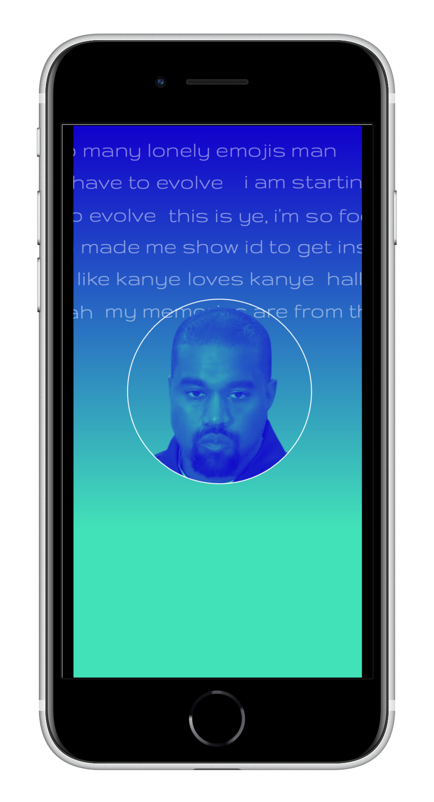

Ye's Brain
Explore the inner workings of Ye Say and the resources that we used in its development. Yes, we went through Kanye West's entire Twitter to make this.

To our knowledge, Ye Say is the best way to have a conversation with Kanye West, without actually having a conversation with Kanye West.
Michael's Take:
Allan Hamilton famously wrote that no one accomplishes anything alone. This especially rang true when Abby and I created Ye Say. Neither of us have worked with Discord's API or have experience in AI development. What started as a joke may have evolved into our computer science professor's biggest "shaking my head" moment of 2022.
Abby's Take:
If people want to talk to Kanye (AI form), proceed with caution. He'll take your soul and crush it with his bare (virtual) hands.
Michael's last conversation with Ye... for now
Version 1.0
The first version of Ye Say is a mish-mash of primitive code writted by myself and Abby and big-brain code from this tutorial. The program reads data from .csv files that we cobbled together by manual entry to keep the program (relatively) tame. I handled Tweets, while Abby took on lyrics. This was tedious, but the result is amusing.
Ye Say 1.0 is dumb. With the exception of a couple of keywords, like 'Pete Davidson', 'Kim', or 'Taylor Swift', the program uses Python's baked-in random function to generate responses from the data that we provided.
Version 2.0
Ye Say 2.0 came to be when somebody suggested that we explore using artificial intelligence to give Ye Say the power to generate "real" responses to user input. The dataset used here was found on Kaggle in .txt format.
Applying AI Technology from Microsoft
The current iteration of Ye Say takes advantage of Microsoft's pretrained DialoGPT conversational AI model to provide contextual responses to user queries. It is important to note that responses aren't actual Kanye West quotes, but are generated from the lyric dataset.
We followed this tutorial and the attached Google Colab notebook to build the bot and train the AI model. The Colab notebook only reads .csv files, so I coded a program to convert our .txt file into the proper format, which presented some problems. The full dataset required more RAM to train than could be allotted by Colab, which meant that our dataset had to be compressed.
We coded a program to remove duplicate verses and certain words from the .txt file (the latter portion only worked to a certain extent) in an attempt to reduce the file size. By removing duplicate lines, and lines containing characters like brackets, we were able to reduce the file to under 6000 lines of data. Even so, the Colab notebook's RAM limitations were still a roadblock and we had to cut and paste the first 800 verses in the dataset into a new .csv file.
Our trained Kanye AI model is available for download, but beware, it says some really out-of-pocket things from time to time. We originally intended to host it on repl.it, but decided against it because of this. You can have limited interactions with the AI in Hugging Face's chat window.